API¶
Contents
The API describes all functionalities implemented for this exercise. Of particular interest is the main script, which can be used to validate an implementation (see testing for how to properly verify your implementation).
The modules lib.spiking_functions and lib.spiking_layer contain the missing functionalities that have to be implemented. Don’t forget to answer the theory question in the file theory_question.txt and submit the completed .txt file with your code.
- Throughout, the following notation is used:
 : The membrane potential.
: The membrane potential. : The post-synaptic current.
: The post-synaptic current. : The spiking activity.
: The spiking activity.
Controller for simulations (main)¶
The module main is an executable script that controls the simulations
(i.e., the training and testing of MNIST digit classification tasks).
For more usage information, check out:
$ python3 main.py --help
|
Trains the given network on the MNIST dataset. |
|
Tests a trained network by computing the classification accuracy on the test set. |
|
Runs the script. |
-
main.train(args, device, x, y, net)[source]¶ Trains the given network on the MNIST dataset.
The
main.trainmethod takes data (x, y) and a spiking neural net, puts the net in training mode, and sets up the optimiser. Then, for each epoch, it runs through the whole MNIST dataset once, updating the weights once every mini-batch, after the images in this mini-batch have been converted to spike trains. Note, theFunctionlib.spiking_functions.loss_on_voltage()is used to compute the loss.- Parameters
args (argparse.Namespace) – The command-line arguments.
device (torch.device) – The PyTorch device to be used.
x (torch.Tensor) – The training inputs.
y (torch.Tensor) – The training targets.
net (lib.snn.SNN) – The spiking neural network.
-
main.test(args, device, x, y, net)[source]¶ Tests a trained network by computing the classification accuracy on the test set.
- Parameters
(...) – See docstring of function
train().x (torch.Tensor) – The testing inputs.
y (torch.Tensor) – The testing targets.
- Returns
The classification accuracy for the test data (x, y) when using the network
net. Note, theFunctionlib.spiking_functions.accuracy_on_voltage()is used to compute the accuracy.- Return type
(float)
Implementation of a spiking multilayer perceptron (lib.snn)¶
The module lib.snn implements a fully-connected spiking neural network.
Internally, it will make use of Functions implemented in module
lib.spiking_functions to define the spiking dynamics in each layer.
|
Implementation of a fully-connected spiking neural network. |
Compute the outputs |
-
class
lib.snn.SNN(args, n_in=1, n_out=1, n_hidden=[10])[source]¶ Bases:
torch.nn.modules.module.ModuleImplementation of a fully-connected spiking neural network.
The
SNNis implemented as a :class:torch.nn.Module, which is a convenient object for building neural networks, sinceModulescan contain otherModules, they can be instantiated multiple times (as with multiple layers), and can easily be manipulated together. For example, theparametersfor aModuleincludes all theparametersattributes of its submodules which you can feed to the optimiser together.The
Modulebuilt here is a spiking neural network, constructed from layers of spiking neurons defined by in thespiking_layerscript.-
spiking_layers¶ A container for your spiking layers.
- Type
- Parameters
n_in (int) – Network input size.
n_out (int) – Network output size.
n_hidden (list) – Size of each hidden layer of the network. This argument implicitly defines the
depthof the network.args (argparse.Namespace) – The command-line arguments.
-
property
depth Getter for read-only attribute
depth.
-
forward(x)[source]¶ Compute the outputs
 of the network.
of the network.- Parameters
x (torch.Tensor) – A tensor of shape 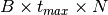, where
 is mini-batch size, 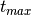 is number of
timesteps, and
is mini-batch size, 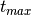 is number of
timesteps, and  is the dimension of a flattened MNIST
image (i.e. 784).
is the dimension of a flattened MNIST
image (i.e. 784).- Returns
Tuple containing:
- U_layers (list): A list of tensors of membrane potentials in
each layer(other than the input), each with shape 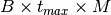, where
is mini-batch size, is number of
timesteps, and  is the number of neurons in the
layer.
is the number of neurons in the
layer.
- S_layers (list): A list of tensors of spiking activities in
each layer (other than the input), each with shape , where
is mini-batch size, is
number of timesteps, and is the number of
neurons in the layer.
- Return type
(tuple)
-
Implementing, training, and evaluating a spiking neural network (lib.spiking_functions)¶
The module lib.spiking_functions contains custom functions that should
be used for running, training and evaluating spiking networks. Specifically,
you must implement the spike nonlinearity function, as well as the functions
computing the loss and the accuracy on the membrane potential of the output
neurons.
Outputs a spike when the input is greater than zero. |
|
Computes cross entropy loss on the maximum membrane voltage of the output units. |
|
Computes the classification accuracy of the spiking network based on the maximum voltage of the output units. |
-
lib.spiking_functions.spike_function(D)[source]¶ Outputs a spike when the input is greater than zero.
This function takes 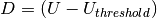 as input, which is the amount by which the membrane potential of neurons is above the membrane threshold
 . There are
neurons in a layer and minibatch size is , hence
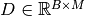.
. There are
neurons in a layer and minibatch size is , hence
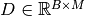.This function computes the spiking nonlinearity, which should produce a spike when a neuron’s membrane potential exceeds or is equal to the membrane threshold potential i.e. when 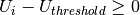.
The spiking nonlinearity we use here is the simple Heaviside step function, 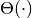, defined as
(1)¶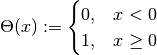
You must code the
spike_function()method to take 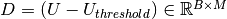 as input and compute 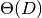 elementwise for each entry in the matrix.- Parameters
D – A matrix of shape 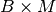 representing 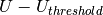, the difference between the membrane potential of each of the
neurons in each of the
images of the mini-batch.- Returns
The output spikes, obtained by applying (defined in eq. (1)) elementwise to D.
-
lib.spiking_functions.loss_on_voltage(U, T)[source]¶ Computes cross entropy loss on the maximum membrane voltage of the output units.
Specifically, this function takes a set of output voltages in form of a matrix 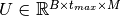, where
denotes the size of
the mini-batch, the number of timesteps during which each
mini-batch is presented, and the number of output units.
Additionally, it takes a set of target labels
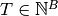, indicating the actual class of each image
 in the current mini-batch.
in the current mini-batch.This function finds the maximum membrane voltage for each output unit and for each element of the mini-batch and calculates the mean of the cross entropies.
The calculation is as follows:
Letting 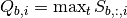 be the maximum membrane potential across all timesteps for each output neuron
 for each image
, we calculate the cross entropy loss:
for each image
, we calculate the cross entropy loss: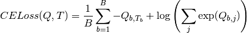
You may wish to refer to the pytorch documentation for its native
torch.nn.CrossEntropyLossclass and use it.- Parameters
U – The output voltage, i.e., the matrix
.T – The target class, i.e., the matrix
 .
.
- Returns
The cross entropy loss for the maximum membrane potentials.
- Return type
(float)
-
lib.spiking_functions.accuracy_on_voltage(U, T)[source]¶ Computes the classification accuracy of the spiking network based on the maximum voltage of the output units.
Takes a set of output voltages in form of a matrix , where
denotes the size of
the mini-batch, the number of timesteps during which each
mini-batch is presented, and the number of output units.
Additionally, this Functionrequires a set of targets , indicating the correct classes of the current mini-batch.Using these two arguments, it finds the output neurons that have the highest membrane voltage for each image, and compares these with the target labels to compute the accuracy.
Letting be the maximum membrane potential across all timesteps for each output neuron
for each image
,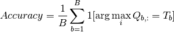
where 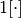 is the indicator function.
- Parameters
U – The output voltages, i.e., the matrix
.T – The target classes, i.e., the vector
.
- Returns
The classification accuracy of the current batch.
- Return type
(float)
A spiking layer module that maintains its own parameters (lib.spiking_layer)¶
The module lib.spiking_layer contains the implementation of a single
spiking layer. The goal is to utilize the custom
Functions implemented in module lib.spiking_functions
and to provide a wrapper that takes care of managing the parameters
( ) of such a layer. The layers defined here will then be used in
) of such a layer. The layers defined here will then be used in
lib.snn to define a multi-layer spiking network.
In biological networks, the electrical activity from a pre-synaptic spike leads to changes in the membrane potential of a post-synaptic neuron. In nature, this is a process involving many ions and channels. Here we will use a simplified model: the leaky integrate-and-fire model for spiking neurons. Such models are composed of 1) a description of the dynamics of the membrane potential, and 2) a mechanism for triggering spikes.
In our implementation, the dynamics of the membrane potential, together with the dynamics of the current and spiking variables, are updated at each timestep based on a discrete implementation of a set of differential equations described below.
The ODEs that you will implement sequentially update the membrane potentials
, the auxiliary variable for the alpha function  , and the
current . The equation for the membrane potential of neuron
is:
, and the
current . The equation for the membrane potential of neuron
is:
(2)¶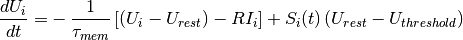
Most commonly, post-synaptic currents resulting from spiking inputs from
pre-synaptic neurons are modeled as exponential decay functions, where a spike
causes an instantaneous increase in the post-synaptic membrane potential, which
then decays exponentially with time i.e. 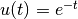, assuming the
pre-synaptic spike occurs at 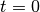, and a resting potential of 0.
A more biologically plausible model is an alpha-shaped post-synaptic current,
where the post-synaptic current following a pre-synaptic spike has a finite rise
time. In this case we would have 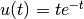. In this tutorial, we
ask you to implement alpha-shaped post-synaptic currents by filling the methods
lib.spiking_layer.update_H() and lib.spiking_layer.update_I().
These are based on the following equations:
(3)¶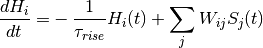
(4)¶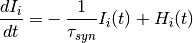
All equations were derived during the tutorial session, and can be found in the tutorial slides. Note, however, that only a discrete version for the case of exponential-shaped post-synaptic currents was derived, and not for the alpha-shaped case, which is the one you need here. Therefore you will need to figure out how to turn the ODEs into code appropriately.
|
Implements a single spiking layer. |
Updates the membrane potential. |
|
Updates the post-synaptic current. |
|
Updates the state of the auxiliary variable for alpha-shaped post-synaptic current. |
|
Computes the output activation of a spiking layer. |
-
class
lib.spiking_layer.SpikingLayer(in_features, out_features, args)[source]¶ Bases:
torch.nn.modules.module.ModuleImplements a single spiking layer.
The
lib.SpikingLayerclass contains all the parameters and variables necessary to implement a single spiking layer. It will be a submodule of thetorch.nn.Moduleinstance namedlib.snn.SNN. You will use the classlib.SpikingLayerto define your hidden layer and your output layer.-
weights¶ The weight matrix
of the layer.- Type
-
compute_spikes¶ Spike non-linearity function.
- Type
func
- Parameters
in_features (int) – Size of the pre-synaptic layer.
out_features (int) – Size of the current layer.
args (argparse.Namespace) – The command-line arguments.
-
property
weights Getter for read-only attribute
weights.
-
update_U(U, I, S)[source]¶ Updates the membrane potential.
Updates the membrane potential given the current and past states of the network as specified in eq. (2).
- Parameters
U – The membrane potential
.I – The post-synaptic current
.S – The spiking activity
.
- Returns
The updated membrane potential of the neurons in the layer.
-
update_H(H, inputs)[source]¶ Updates the state of the auxiliary variable for alpha-shaped post-synaptic current.
Implementation of eq. (3). Please note that the pre-synaptic inputs have already been multiplied by the weights at the beginning of the forward method. Therefore, you should only make sure you give the correct inputs argument to this function.
- Parameters
H – The auxiliary variable for the alpha-shaped post-synaptic currents
.inputs – The inputs (weighted spikes) to the layer in the current time step.
- Returns
The updated auxiliary current variable for the neurons in the layer.
-
update_I(I, H)[source]¶ Updates the post-synaptic current.
Updates the post-synaptic current given the current and past states of the network as specified in eq. (4).
- Parameters
I – The post-synaptic current
.H – The auxiliary variable for the alpha-shaped post-synaptic currents
.
- Returns
The updated post-synaptic current of the neurons in the layer.
-
forward(X)[source]¶ Computes the output activation of a spiking layer.
This method computes the membrane potential and spiking activity of the current layer across all time steps given the pre-synaptic spiking activity. For this, the state of the layer is updated time step by time step; i.e. the post-synaptic current, membrane potential and spiking activity are computed in each time step. The states are updated based on the computational graph provided in Figure 2 in Neftci et al. (2019), and when filling in the missing lines you should pay extra attention and make sure that the values you provide to the update methods belong to the right time step according to this computational graph.
Note that since we deal with alpha-shaped post-synaptic currents here (and not exponential decay post-synaptic currents), the computational graph has an extra variable
that is updated based on the
inputs in the previous time step, and its own value in the previous
time step. in a given time step is then used to compute the
post-synaptic current in the following time step. Notice that
for this extra equation, the lib.SpikingLayerclass has an attribute that governs the decay rate of the variable
. For further discussion see
that governs the decay rate of the variable
. For further discussion see lib.spiking_layer.- Parameters
X – The spiking activity of the previous layer.
- Returns
Tuple containing:
U: The membrane potential for all neurons of the layer in all time steps.
S: The spiking activity of all neurons of the layer in all time steps.
- Return type
(tuple)
-
A collection of helper functions (lib.utils)¶
The module lib.utils contains several general purpose utilities and
helper functions.
The functions utils.current2firing_time() and
utils.sparse_data_generator() are taken directly from Friedemann Zenke’s
Spytorch tutorial:
A collection of helper functions ( |
|
|
Converts MNIST pixel values to latency-coded spikes. |
|
A generator that takes mini-batches in analog format and transforms them to spike trains as sparse tensors. |
|
Plot histogram of the initial and trained weights in each layer. |
-
lib.utils.current2firing_time(x, tau=20, thr=0.2, tmax=1.0, epsilon=1e-07)[source]¶ Converts MNIST pixel values to latency-coded spikes.
Computes first firing time latency for a current input x assuming the charge time of a current based LIF neuron. Images to spikes using a spike latency code, i.e. the higher the input intensity, the earlier the first spike will be fired.
- Parameters
x (numpy.ndarray) – The “current” values for each pixel in each image. Shape: (samples, 784)
- Keyword Arguments
- Returns
- Time to first spike for each “current” x.
Shape: (samples, 784)
- Return type
T (numpy.ndarray)
-
lib.utils.sparse_data_generator(x, y, args, shuffle=True)[source]¶ A generator that takes mini-batches in analog format and transforms them to spike trains as sparse tensors.
- Parameters
x – The data ( sample x event x 2 ) the last dim holds (time,neuron) tuples, (samples, 28 x 28)
y – The labels (samples,)
args (argparse.Namespace) – The command-line arguments.
shuffle (boolean) – Whether batches should be shuffled.
- Yields
(tuple) –
Tuple containing:
X_batch: Spiking mini-batch.
y_batch: Target classes for the current mini-batch.
-
lib.utils.load_MNIST(path='data/')[source]¶ (Down)Loads data for a classification task on MNIST images.
The Torchvision library provides methods to load the MNIST dataset from a local directory if the data have been downloaded previously, or to download and load the data if they cannot be found locally.
The data are split into train and test sets and are preprocessed to convert the pixel values from [0,255] to [0,1]. Each 28 x 28 image is flattened to a 784 vector.
-
lib.utils.plot_weight_hist(parameters, initial_weights)[source]¶ Plot histogram of the initial and trained weights in each layer.
For each layer, a different subplot with overlapping weight distributions before and after training will be shown.
- Parameters
parameters – The set of weights after training.
initial_weights (list) – The set of initial weights.